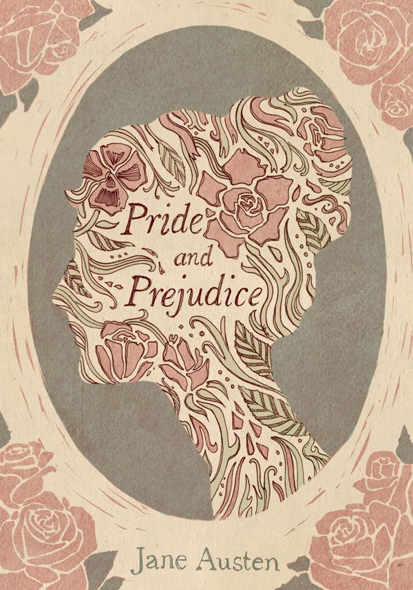
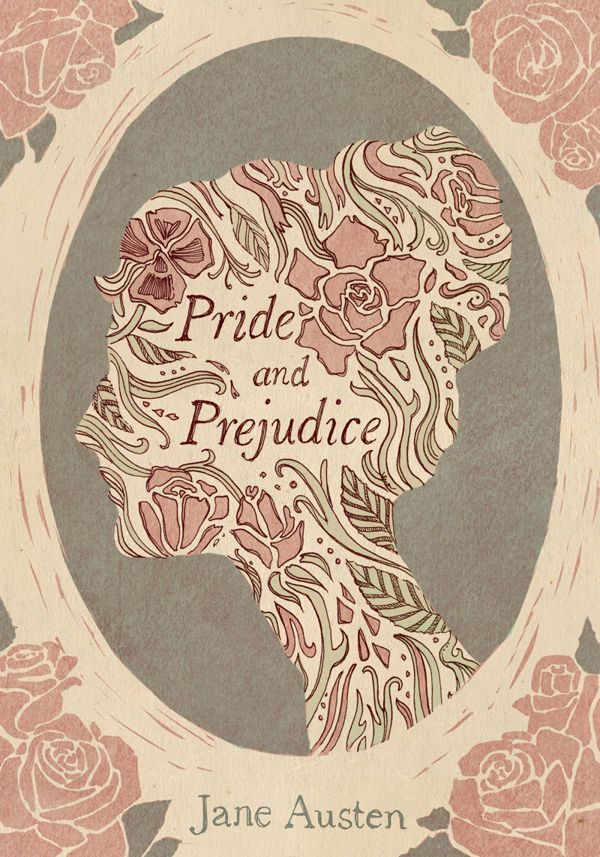
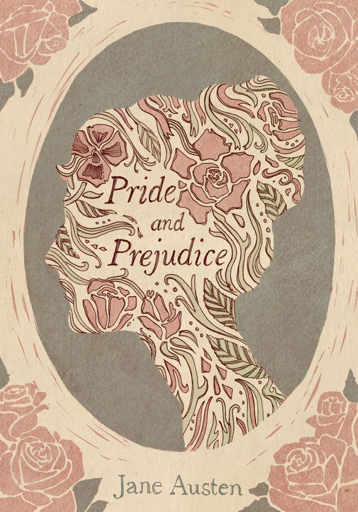
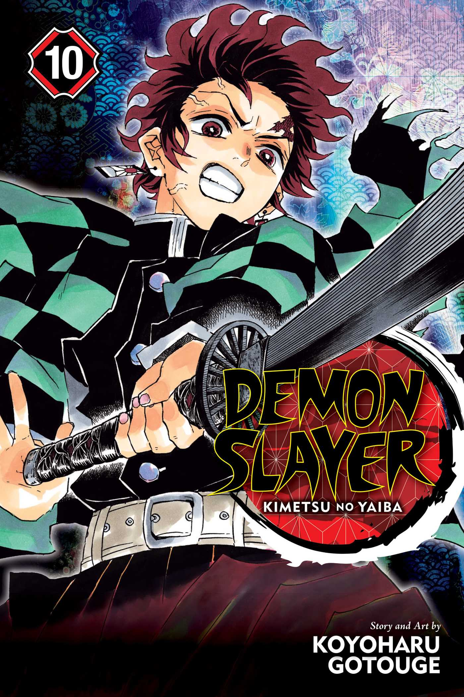
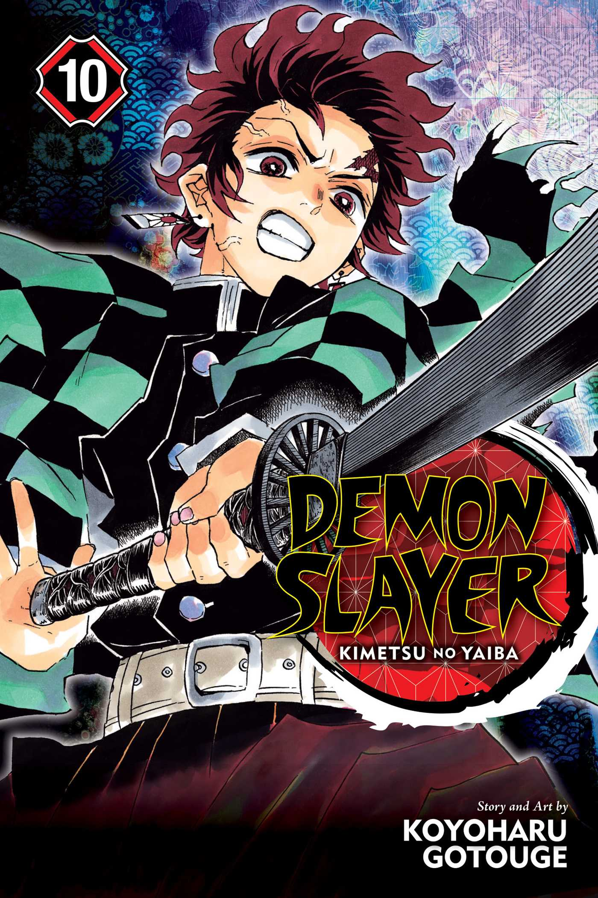

Cinco años después de ganar el torneo mundial de artes marciales, Gokuu vive ahora una vida pacífica con su esposa y su hijo. Esto cambia, sin embargo, con la llegada de un misterioso enemigo llamado Raditz que se presenta como el hermano perdido de Gokuu. Revela que Gokuu es un guerrero de la una vez poderosa pero ahora virtualmente extinta raza saiyana, cuyo mundo natal fue completamente aniquilado. Cuando fue enviado a la Tierra como un bebé, el único propósito de Gokuu era conquistar y destruir el planeta; pero después de sufrir amnesia por una herida en la cabeza, su naturaleza violenta y salvaje cambió, y en vez de eso fue criado como un niño amable y educado, ahora luchando para proteger a otros.Con su intento fallido de reclutar por la fuerza a Gokuu como aliado, Raditz advierte a los amigos de Gokuu de una nueva amenaza que se está acercando rápidamente a la Tierra, una que podría sumir a la Tierra en un conflicto intergaláctico y hacer temblar los propios cielos. Se librará una guerra por las siete místicas bolas de dragón, y sólo los más fuertes sobrevivirán en Dragon Ball Z.
Fantasía Novelas Manga
Después de la épica batalla contra Vegeta, Son Goku debe obtener las deseadas esferas de dragón para resucitar a sus amigos caídos. Su búsqueda les llevará al planeta Namekusei, donde el malvado Freezer y sus esbirros están esclavizando a sus habitantes con el único objetivo de que él cumpla su deseo de inmortalidad.
anterior siguiente
Aquí vas a encontrar nuestras recomendaciones de Novelas Románticas

"La sola mención del nombre de Anna Karénina sugiere inmediatamente dos grandes temas de la novela decimonónica: pasión y adulterio. Anna Karenina, que Tolstói empezó a escribir en 1873 y que no vería publicada en forma de libro hasta 1878, es una exhaustiva disquisición sobre la institución familiar y, como dice Víctor Gallego (autor de esta nueva traducción), 'una fábula sobre la búsqueda de la felicidad".
Bodas de sangre de Federico García Lorca es una des las obras maestras de la poesía y dramaturgia en español. Es una tragedia escrita en verso y en prosa y publicada en 1931. "El tema de esta obra surgió a raíz de una noticia aparecida en prensa: dos amantes se fugan en la víspera de la boda de la mujer con otro hombre. Y a partir de ahí, García Lorca convierte la realidad en poesía combinando en su obra hay ansias de libertad, andalucismo, simbolismo y muerte, pero por encima de todo, poesía dramática. Bodas de sangre es una obra teatral donde las desgarradas pasiones de sus protagonistas se desatan ante la atenta mirada de la luna, personificación hermosa y terrible de la muerte".
"Con gran sabisuría y sensualidad chispeante, su autora consigue, en los fogones de una vieja cocina, traducir la pasión y el amor reprimidos por la dura moral de una familia mexicana. Reflexión generacional, elogio del secreto y del amor
Cumbres Borrascosas es la única novela de Emily Brontë. Fue publicada por primera vez en 1847 bajo el seudónimo de Ellis Bell. "Esta obra, considerada como un clásico de la literatura inglesa, transita por la épica historia de Catherine y Heathcliff, situada en los sombríos y desolados páramos de Yorkshire, y constituye una asombrosa visión metafísica del destino, la obsesión, la pasión y la venganza".
"García Márquez traza la historia de un amor que no ha sido correspondido por medio siglo. Aunque nunca parece estar propiamente contenido, el amor fluye a través de la novela de mil maneras: alegre, melancólico, enriquecedor, siempre sorprendente. La historia de amor entre Fermina Daza y Florentino Ariza, en el escenario de un pueblecito portuario del Caribe y a lo largo de más de sesenta años, podría parecer un melodrama de amantes contrariados que al final vencen por la gracia del tiempo y la fuerza de sus propios sentimientos, ya que García Márquez se complace en utilizar los más clásicos recursos de los folletines tradiciones. Pero este tiempo -por una vez sucesivo, y no circular-, este escenario y estos personajes son como una mezcla tropical de plantas y arcilla que la mano del maestro moldea y con las que fantasea a su placer, para al final ir a desembocar en los territorios del mito y la leyenda.".
"La novela más conocida de Gustave Flaubert y una de las grandes obras de la literatura universal nos acerca a la historia de Emma Rouault, una joven de origen campesino y huérfana de madre que contrae matrimonio con el médico Charles Bovary. El afán por ser la protagonista de una vida romántica presidida por el amor, ambición que su marido no puede satisfacer, será la perdición de la ingenua muchacha, que buscará por todos los medios, con aventuras y con amantes, escapar al tedio, la monotonía y la exasperación que se han apoderado de su vida".
"Orgullo y prejuicio, publicada en 1813 tras el éxito de Juicio y sentimiento, reúne de forma ejemplar sus temas recurrentes y su visión inimitable en la historia de las cinco hijas de la señora Bennett, que no tiene otro objetivo en su vida que conseguir una buena boda para todas ellas. En sus páginas, el opresivo ambiente de la familia, la presión del matrimonio, la diferencia de clases, el fantasma de la pobreza y la delicada sensibilidad de una heroína decidida, pero no libre de errores de juicio y dudas de comportamiento, se conjugan para crear una obra maestra leída a lo largo de más de dos siglos".
Aquí vas a encontrar nuestras recomendaciones de Mangas y Animes
 



La influencia de Akira en la cultura popular occidental se deja sentir desde el primer instante. Tanto el anime como el manga son mayúsculos. Una de esas experiencias que te arrastran y no te sueltan hasta dejarte los huesos, con una lectura de sociedad postapocalíptica y mundo cyberpunk inmejorable. Digna del mismísimo Philip K. Dick.
Narrada por Tsugumi Oba e ilustrada por Takeshi Obata, Death Note narra la historia de Light Yagami, un inteligente y taciturno estudiante de secundaria que está aburrido con su vida. Un buen día, llega a sus manos un extraño cuaderno. «Cuaderno de muerte», reza la portada. ¿De qué se trata? ¿Acaso es una broma? ¿Qué significa todo eso? Death Note es otro de los mangas indispensables para todo lector amateur que quiera iniciarse. Divertida, intensa, llena de grandes e inolvidables momentos, con personajes carismáticos y una trama que engancha. El anime está a la altura, obviamente, pero la experiencia lectora también es muy recomendable.
Guardianes de la Noche no trata de reinventar nada. Es un shonen clásico, pero cuenta con unos protagonistas arrolladores y un mundo extraordinariamente bien construido. Donde mucho abunda, poco brilla; pero lo que brilla, lo hace con una potencia cercana al sol. Esta es la última estrella de la industria del manga. No te la pierdas, en serio.
Un valiente joven con poderes increíbles se aventura hacia un viaje místico en tierras exóticas llenas de guerreros nobles, princesas hermosas, monstruos mutantes, extraterrestres y crueles ejércitos.
Escrita y dibujada por Hiromu Arakawa, Fullmetal Alchemist nos sumerge en un universo steampunk próximo al mundo creado por la Revolución Industrial. Sin embargo, en este mundo de ficción la alquimia es una de las técnicas científicas más empleadas y conocidas por los humanos. Y allí es donde entran Edward y Alphonse Elric. Fullmetal Alchemist es una historia sobre la pérdida, la familia, el amor y la aceptación personal. Sus temas son muchos y muy variados, y todo se afronta con una perspectiva aventurera y con un ritmo narrativo sólido y frenético. Uno de esos mangas que te recuerdan por qué merece la pena darle una oportunidad al género.
Escrita y dibujada por Masashi Kishimoto, Naruto cuenta la historia de un ninja adolescente. Sus padres murieron cuando él era solo un niño tras el ataque del Zorro Demonio de Nuevo Colas. Desde entonces, Naruto Uzumaki crece en su querida aldea y sueña con convertirse en Hokage, líder de su pueblo. Busca reconocimiento y ser alguien importante, dado a sus amigos y su nueva familia. Este shonen es, indudablemente, uno de los pilares fundamentales de la historia del manga. El valor de Naruto sigue y seguirá representando uno de los máximos exponentes de la cultura popular nipona. Trascendió fronteras y barrió cualquier obstáculo que se puso en mitad de su camino. Una gran forma de iniciarse en estos universos de ficción comiqueros.
Narrada e ilustrada por Eiichiro Oda, One Piece es quizás el manga más importante, grande y reconocido de la historia. Pocas franquicias tienen el peso que tiene One Piece. Sin embargo, a pesar de su magnífica narrativa, es una historia extraordinariamente extensa. La cantidad de episodios podría echar para atrás al nuevo lector. Pese a ello, lo recomendamos.